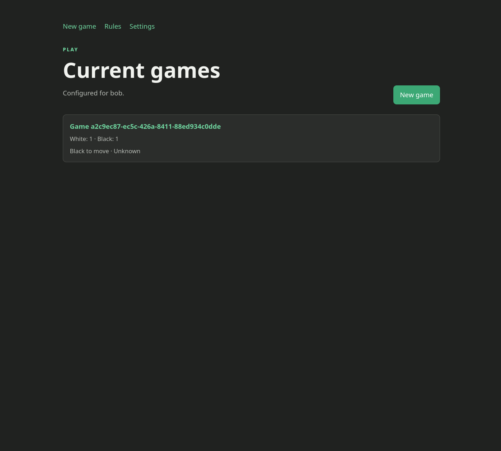
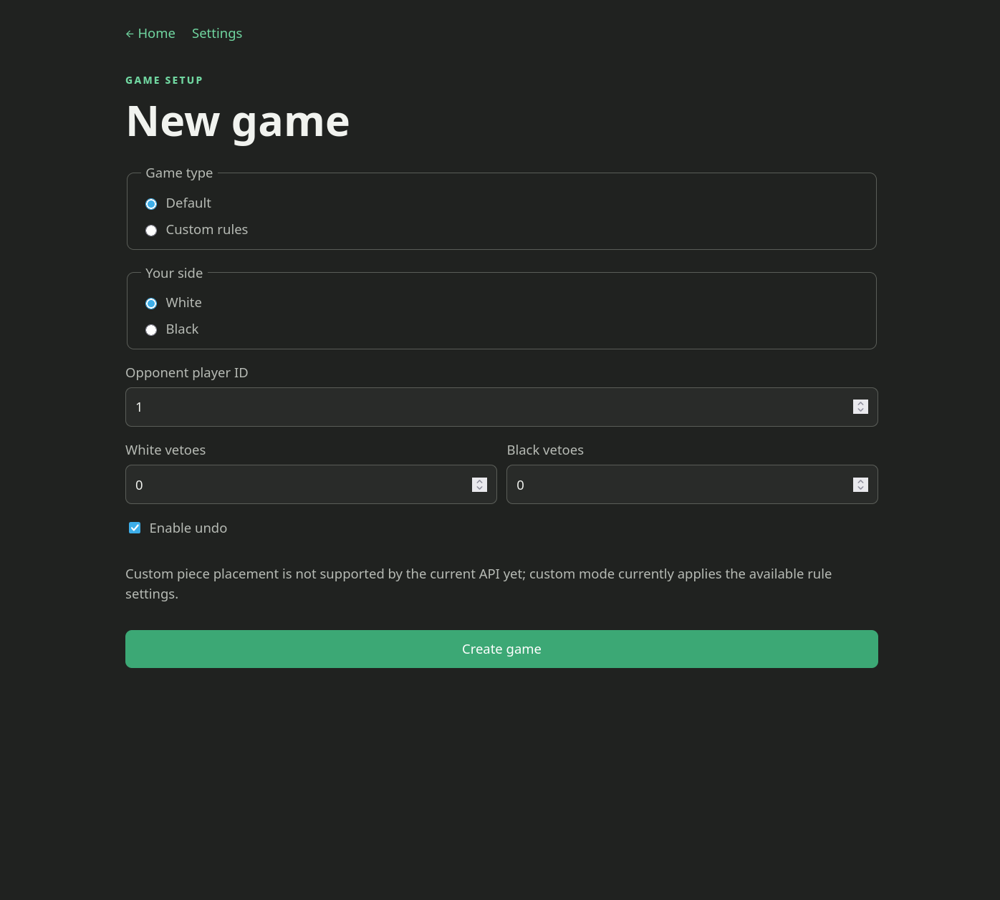
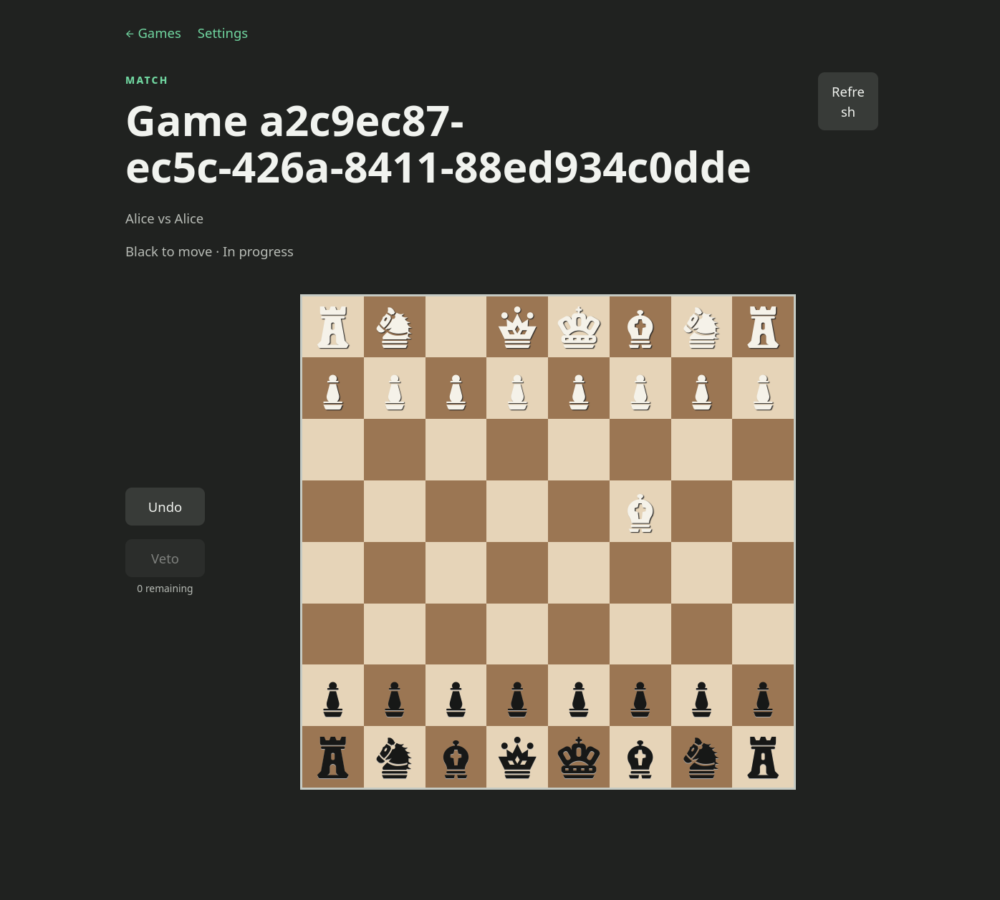

Project showcase · C# · web game · networking
JumpChess
A chess variant built for fun with my wife, while exploring how two players can connect through different networks and VPN setups.
What I built
JumpChess adds a simple twist to familiar chess: each piece can hop over one friendly piece during a move. The shared C# game library enforces the rules, an API manages games and moves, and the browser client renders the board and player controls.
It was also an experiment in connecting people outside the same local network. The settings page lets each player target a configurable API address, making it possible to test local hosting, port forwarding, and VPN connections such as a private network between players.



Highlights
- Implemented a reusable C# game library with move validation.
- Added API endpoints and automated tests for games and moves.
- Built a responsive browser board with selectable pieces and controls.